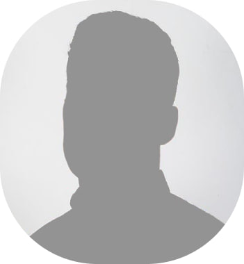
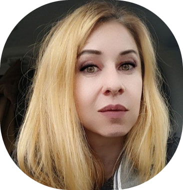
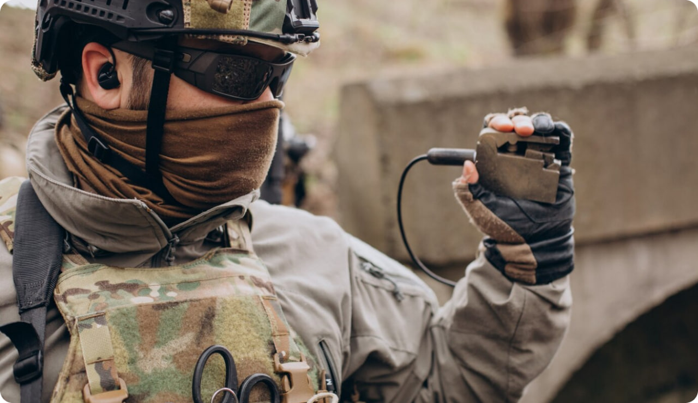
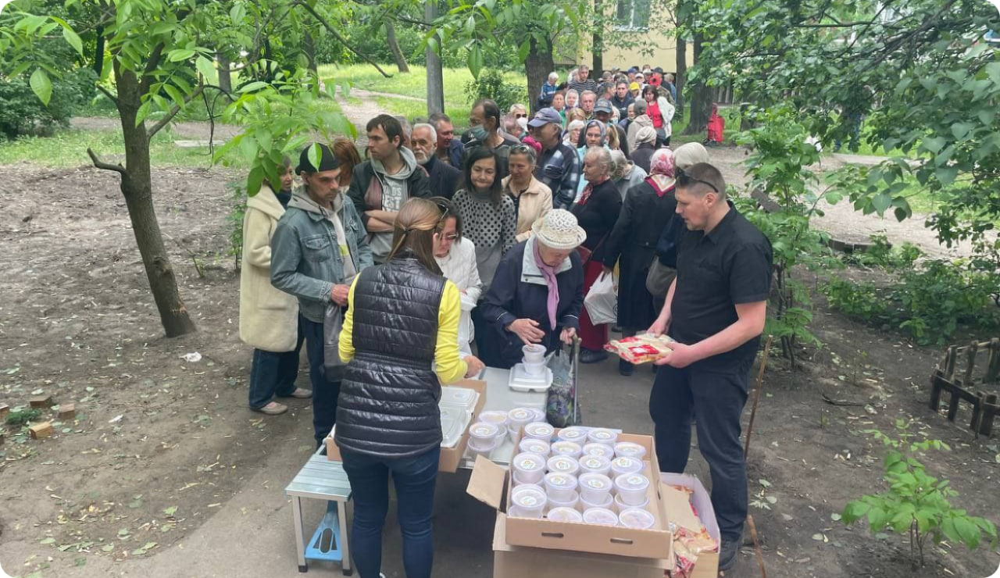

Наша мета - створитиспільноту, де кожен може
зробити свій внесок у
покращення життя інших.
> 40 бригадам
Надано допомоги військовим
> 1000 чол.
Допомогли військовим в реабілітації
> 7000 чол.
Надано допомоги цивільним
Про фонд
Благодійний фонд «Твій вчинок» виник на початку повномасштабного вторгнення Росії в Україну. Його заснували
звичайні люди, які, захищаючи свої громади на блокпостах, вирішили допомагати цивільним, дітям і військовим.
Фонд співпрацює з Інститутом ортопедії та травматології, відкрив масажний кабінет для безкоштовної допомоги
військовим. Також він забезпечує бригади дронами, аптечками, медикаментами й іншими засобами. Волонтери фонду
регулярно виїжджають на передову, розширюючи масштаби допомоги завдяки співпраці з іншими організаціями.
Наша команда:

Тимошенко Сергій Олександрович

Здоревська Людмила Василівна
Напрямки діяльності
Реабілітація військових після поранень
Благодійний фонд «Твій вчинок» активно підтримує захисників, які потребують відновлення після
травм.
Ми
забезпечуємо повний спектр послуг для повного одужання, включаючи фізичну та психологічну
підтримку.
Усі
ці послуги надаються військовим абсолютно безкоштовно.
Спільно з Інститутом ортопедії та травматології запущено масажний кабінет, де реабілітологи
надають
безкоштовну допомогу військовим.

Фінансова та матеріальна підтримка військових підрозділів
Фонд забезпечує бригади необхідними засобами для виконання завдань на передовій: дронами,
аптечками,
медикаментами, каріматами та іншим. Волонтери фонду регулярно виїжджають до зони бойових дій,
розширюючи допомогу завдяки співпраці з іншими організаціями.

Допомога цивільним та дітям
Наш фонд активно допомагає цивільним людям, які постраждали від війни. Ми підтримуємо тих, хто
втратив своїх близьких, опікуємося дітьми-сиротами та дитячими будинками. Забезпечуємо їх їжею,
необхідними речами та підтримкою, щоб хоч трішки полегшити їхнє життя в цей складний час.
Ми також піклуємось про дитячі будинки та дітей, які через війну залишилися без батьків. Ми
забезпечуємо їх солодощами, медикаментами та засобами гігієни, щоб підтримати їх у цей складний
час.
Наша мета — подарувати їм частинку тепла і турботи, які так необхідні кожній дитині.